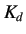
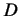
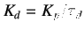
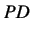
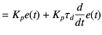
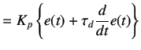

As the name suggests, a derivative parameter generates a control action by calculating the rate of change of error.
A derivative action is thus generated by multiplying the value of rate of change of error with a derivative gain .
Mathematical representation of the same is given below.
where,
 is the derivative output
is the derivative gain (
, where,  is the derivative time)
is the derivative time)
The derivative action slows down the rate of change of the controller output. A derivative controller is quite useful when
the error is continuously changing with time. One should, however, avoid using it alone. This is because there is no output
when the error is zero and when the rate of change of error is constant.
When all the above control actions are summed up and used together, the final equation becomes
The above equation represents an ideal form of PID controller. This means that the integral controller can be used
independently. However, it is not a good decision since, the integral action begins only after the error exits for
some amount of time. The proportional controller however begins as soon as the error starts existing. Hence, the integral
controller is often used in conjunction with a proportional controller. This is popularly known as PI controller and the
equation for Proportional Integral action becomes,
Similarly, as discussed before, independent use of derivative controller is also not desirable. Moreover, if the process
contains high frequency noise then the derivative action will tend to amplify the noise. Hence, derivative controller is
also used in conjunction with Proportional or Proportional Integral controller popularly known as PD or PID, respectively.
Therefore the equation for Proportional Derivative action becomes,
|  |
 |
(5.7) |
| |
 |
(5.8) |
Finally, writing the equation for PID controller,
rokade
2017-04-23